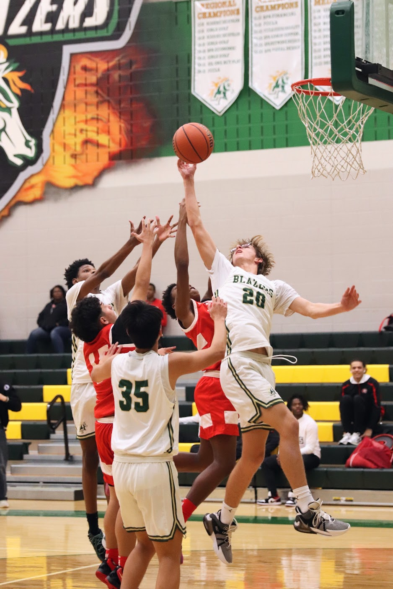
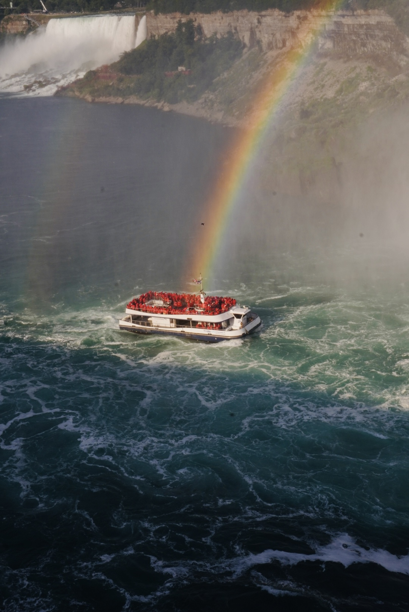
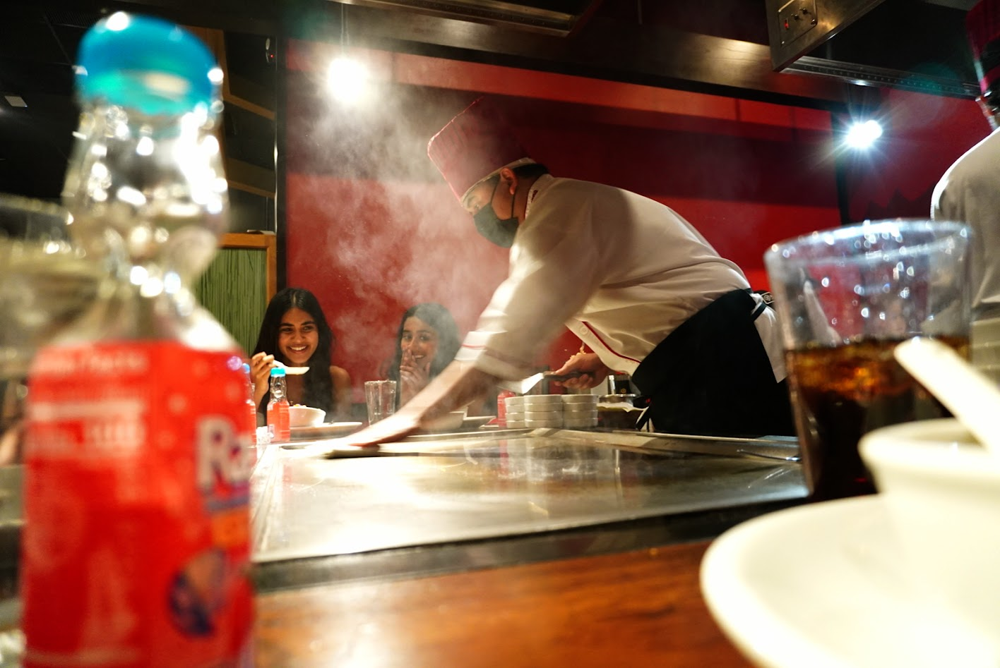
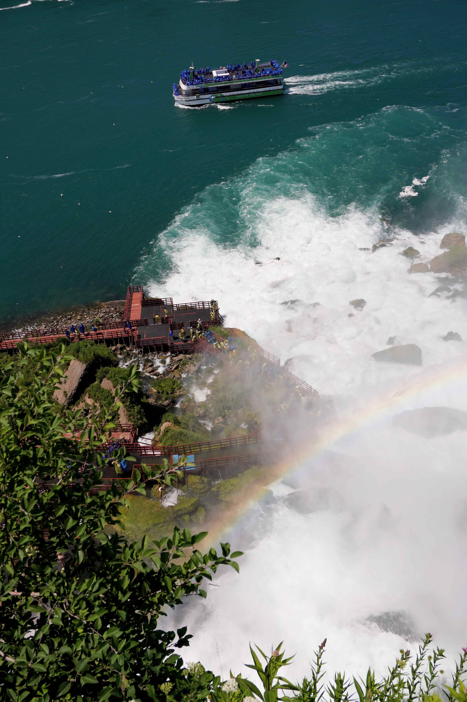
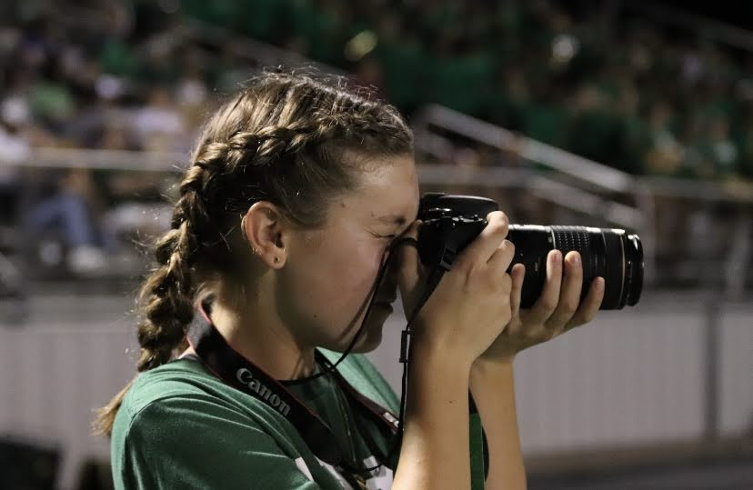
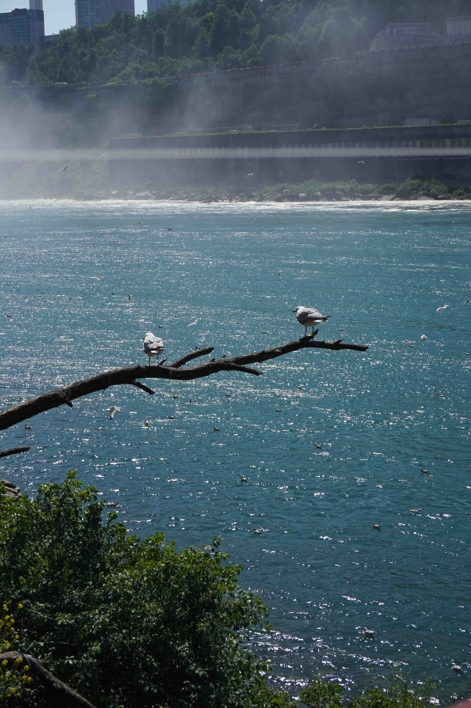
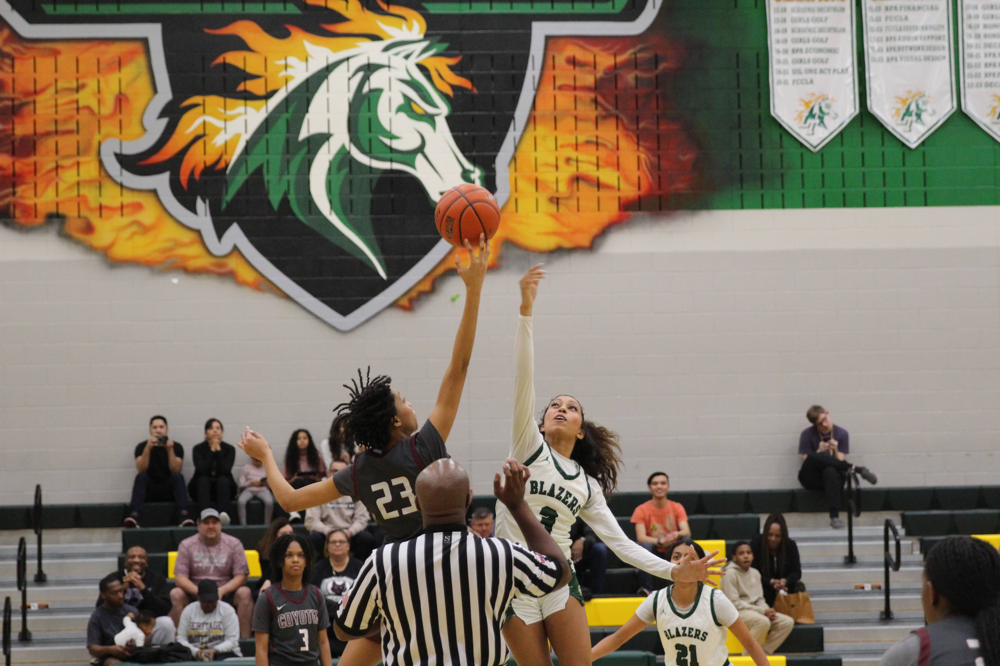
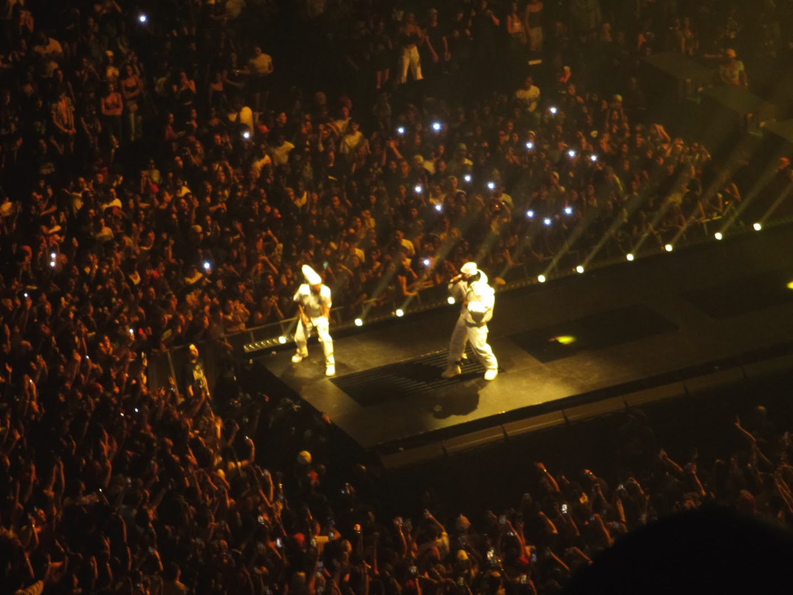
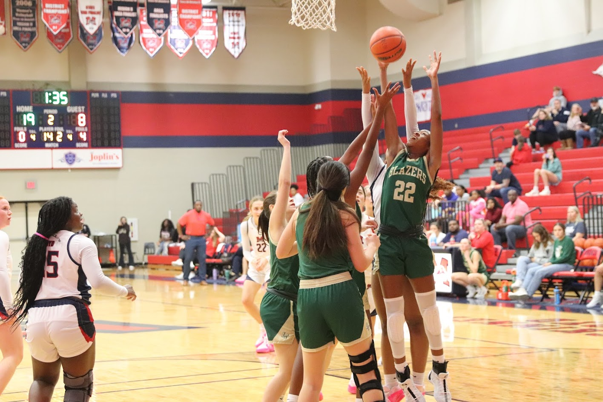
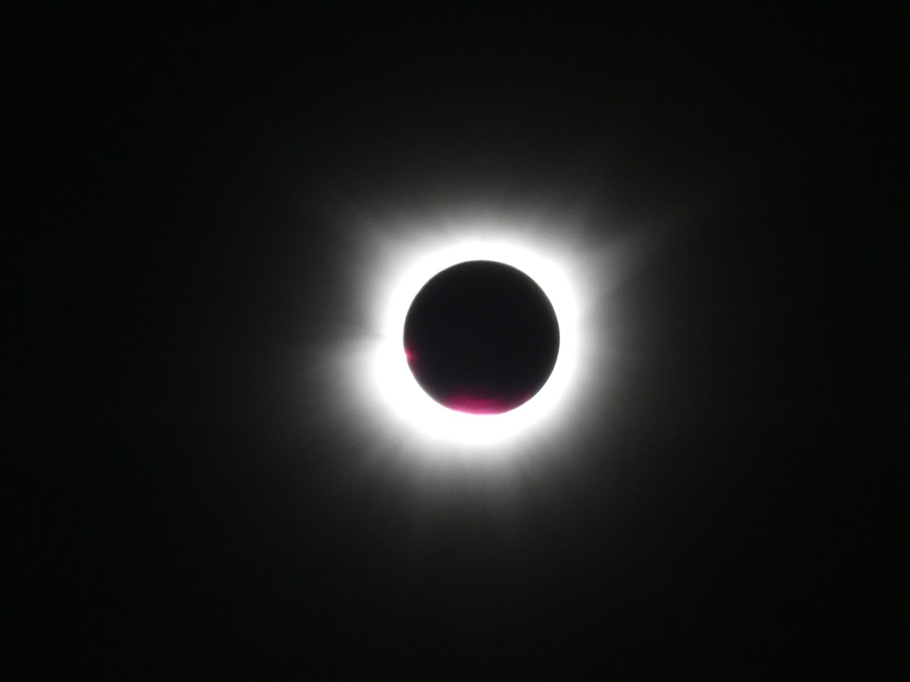

Photography
Photography Collection
A collection of photographs exploring composition, perspective, light, and visual storytelling.
About the Collection
Photography is one of the ways I explore visual storytelling. I enjoy capturing everyday moments, experimenting with composition, and finding interesting perspectives in familiar environments. This collection highlights photographs that reflect my interest in visual composition and creative direction.
Selected Photography











Skills
Photography • Composition • Visual Storytelling • Creative Direction • Image Editing
← Back to Design